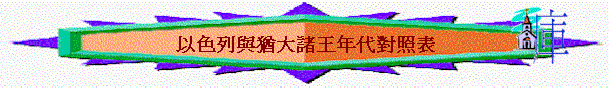

以色列與猶大諸王年代對照表 (參考:http://www.hebrew.idv.tw/inkings.htm)
|
以色列(北國) |
猶大(南國) |
||
|
耶羅波安第一（X 22） 930-910 拿答（X 2） 910-909 巴沙（X 24） 909-886 以拉（X 2） 886-885 心利（X 七日） 885 暗利（X 12） 885-874 亞哈（X 22） 874-853 亞哈謝（X 2） 853-852 約蘭（X 12） 852-841
耶戶（X 28） 841-814 約哈斯（X 17） 814-798 約阿施（X 16） 798-782 耶羅波安第二（X 41） 793-753 撒迦利雅（X六個月） 753-752 沙龍（X一個月） 752 米拿現（X 10） 751-742 比加轄（X 2） 741-740 比加（X 20） *751-732 何細亞（X 9） 731-723 |
王上12:16-20 王上14:19-20 王上15:25-32 王上15:33-16:6 王上16:8-10 王上16:15-20 王上16:21-28 王上16:29-33 王上22:29-40 王上22:51-53 王下1:1-16 王下1:17 王下9:21-26 王下9:1-10:36 王下13:1-9 王下13:10-13 王下14:23-29 王下15:8-12 王下15:13-16 王下15:17-22 王下15:23-26 王下15:27-31 王下17:1-18 |
羅波安（X 17） 930-914 亞比央（X 3） 913-911 亞撒（O 41） 910-870 約沙法（O 25） 873-849 約蘭（X 8） 849-842 亞哈謝（X 1） 841 亞他利雅（X 6） 841-836 約阿施（O 40） 836-797 亞瑪謝（O 29） 797-768 亞撒利雅（烏西雅） 791-740 （O 52） 約坦（O 16） 751-736 亞哈斯（X 16） 736-716 希西家（O 29） *729-687 瑪拿西（X 55） *696-642 亞們（X 2） 641-640 約西亞（O 31） 639-609 約哈斯（X三個月） 609 約雅敬（X 11） 608-598 約雅斤（X三個月） 598 西底家（X 11） 597-586 |
王上11:43-12:1 王上14:31-15:6 王上15:8-15 王上22:41-50 王下8:16-19 王下8:25-29 王下11:1-3 王下12:1-21 王下14:1-7 王下15:1-7 王下15:32-38 王下16:1-4 王下18:1-9 王下21:1-3 王下21:19-26 王下22:1-2 王下23:31-32 王下23:36-37 王下24:8-9 王下24:18-20 |
以上所有年代均為公元前。
（ ）中的X或O代表耶和華眼中的壞或好王，數目代表作王多少年。
*比加大概是米拿現和比加轄作王時的幕後操權人物
*亞哈斯與希西家、希西家與瑪拿西曾共同攝政
*暗利興起時，提比尼與他對立作王（王上16:21）